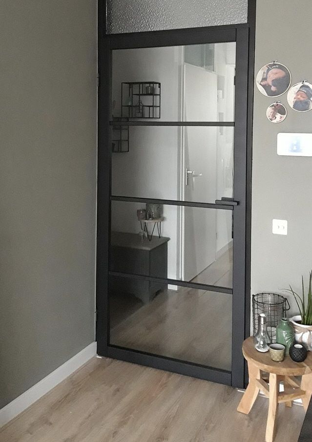

Charlotte & Jolien, Erkende diëtisten | we've got your back
 EATING HABITS Mijn account Charlotte & Jolien Ons traject Classes Blog Home Body sculptor Bia-meting Contact WebshopNEW NEW NEW NEW NEW NEW NEW NEW NEW NEW NEW NEW NEW NEW NEW NEW NEW NEW
EATING HABITS’ FOODBOXEN i.s.m. AD Delhaize Deinze
vind alle info op de WEBSHOP & onze laatste BLOGPOST
EATING HABITS
by Charlotte & Jolien
2 erkende diëtisten
2 foodbuddies van hetzelfde kaliber
ONTDEK ONZE VISIE
Eating Habits op de markt in Deinze is de plek waar je zowel wordt geïnformeerd, gemotiveerd als geïnspireerd om jou te doen slagen in jouw nieuwe gezonde levensstijl!
Let’s do this together?
YES! LEER ALLES OVER MIJN TRAJECT
Ons aanbod
begeleiding
Eating Habits biedt een traject aan waar het totaalplaatje wordt aangekaart! Dit alles zeer praktisch, haalbaar, duidelijk & visueel. Daar waar de consultaties vroeger in te kort schoten is nu volop op ingezet!
meer info
classes
De classes zijn seizoensgebonden, kaarten hot topics aan & spelen in op de actualiteit. Neem gerust een kijkje of er iets voor jou tussen zit!
meer info
bia-meting
ontdek jouw lichaamssamenstelling
De metingen zitten niet meer standaard in onze begeleiding / ons traject. Maar deze kunnen wel aanvullend ingeboekt worden. Ook als je niet in begeleiding bent bij ons maar je wil graag eens een uitgebreide analyse van jouw lichaam kan dit zeker!
meer info
bodysculptor
Leer jouw lichaam opnieuw beter vet verbranden!
De Bodysculptor activeert en traint de vetverbranding (lipolyse). Deze behandeling is een mooie aanvulling op jouw gezonde levensstijl & geeft een extra duwtje in de rug!
meer info
YES! KOOP MIJN TRAJECT EN BODYSCULPTORSESSIESWe’ve got your back
We gaan samen aan de slag!
#teamworkmakesthedreamwork
ontdek ons traject
Tips, nieuwtjes
en heerlijke gerechten.
YAY! DE EATING HABITS FOODBOXEN ZIJN ER!
lees meer
EATING HABITS E-BOOKS : gezonde, snelle & lekkere inspiratie!
lees meer
alle berichten
class
in de kijker
SNACK-ATTACK!
± 90min. | €75Alles over tussendoortjes, koeken & snacks. Ben jij een emo-eter? Of eerder een gewoonte eter? En hoe ga je hiermee om? Kom er alles over te weten in deze class!
lees meer
alle classes
home pagina
Zin om samen met ons
aan de slag te gaan?
boek hier online
Ontdek onze tips, nieuwtjes
en heerlijke gerechten.
ontdek ze hier
Thanks a million. ü§ç Wat is het hartverwarmend GRIEKSE PASTASCHOTEL üßÄ IngredieÃànten (4 perso üì¢ EATING HABITS‚Äô CLASSES GAAN WEER TER PLAATS ‚ÄúYOUR FOOD BUDDIES IN A BOX!‚Äù üì¶ Swipe left EeÃÅn van ons favoriete wraplunchkes üåØ Ingredi EATING HABITS Markt 36,
9800 Deinze
( route )
0497/65.50.86 (Charlotte)
0486/97.23.56 (Jolien)
info@eating-habits.be